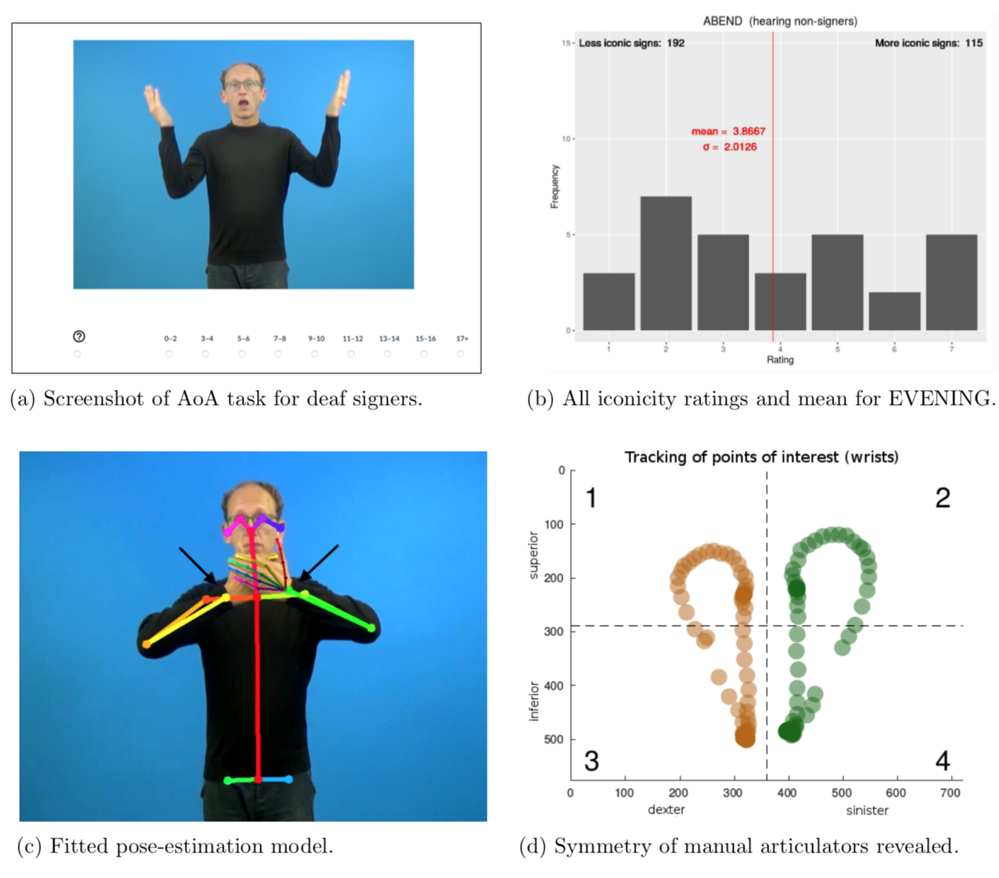

Psycholinguistic norms for more than 300 lexical manual signs in German Sign Language (DGS)
 Example stimulus EVENING used in the study.
Example stimulus EVENING used in the study.
Psycholinguistic norms for more than 300 lexical manual signs in German Sign Language (DGS)
Abstract
Sign languages provide researchers with an opportunity to ask empirical questions about the human language faculty that go beyond considerations specific to speech and writing. Whereas psycholinguists working with spoken and written language stimuli routinely control their materials for parameters such as lexical frequency and age of acquisition (AoA), no such information or normed stimulus sets are currently available to researchers working with German Sign Language (DGS). Our contribution presents the first norms for iconicity, familiarity, AoA, and transparency for DGS.
The normed stimulus set consists of more than 300 clips of manual DGS signs accom- panied by mouthings and non-manual components. Norms for the signs in the clips are derived from ratings by a total of 30 deaf signers in Leipzig, Göttingen, and Hamburg, as well as 30 hearing non-signers and native speakers of German in Leipzig. The rating procedure was implemented in a browser to ensure functionality and a similar procedure across locations and participants (Figure 1a), yet all participants performed the ratings on site in the presence of an experimenter. Deaf signers performed a total of three tasks in which they rated stimulus clips for iconicity, AoA, and familiarity. Such subjective measures of AoA and familiarity have been shown to be good proxies for corpus measures in studies of other spoken and sign languages (Vinson, Cormier, Denmark, Schembri, & Vigliocco, 2008). Hearing non-signers performed two tasks in which they first guessed the meaning of the signs in the clips to determine transparency and in the second task rated iconicity given the meaning.
In addition to empirical norming data (e.g., Figure 1b), we provide information about German and English correspondences of signs. The stimulus set has been annotated in machine-readable form with regard to lexico-semantic as well as phonological properties of signs: one-handed vs. two-handed, place of articulation, path movement, symmetry, most likely lexical class, animacy, verb type, (potential) homonymy, and potential dialectal variation. Information about sign on- and offset for all stimulus clips and a number of quantitative measures of movement are also available. These were derived from automated motion tracking by fitting a pose-estimation model (Figure 1c) to the clips using OpenPose (Wei, Ramakrishna, Kanade, & Sheikh, 2016) which allows us to quantify and automatically track movement (velocity and acceleration) beyond annotation (Figure 1d).
In this presentation, we will focus on providing an overview of the derived norms and attempt to put them in perspective of published empirical norms for other sign languages, for example, ASL and BSL (Vinson et al., 2008; Caselli, Sehyr, Cohen-Goldberg, & Emmorey, 2017), as well as comparable information for spoken languages. This includes a comparison of our subjective rating data with regard to frequency and AoA obtained using DGS signs with norms for other sign languages as well as with similar measures for German and English. We also discuss the relationship of mean iconicity ratings between deaf signers and hearing non-signers, as well as the relation of iconicity and transparency.
Our norms and stimulus set are intended to control for psychologically relevant param- eters in future psycho- and neurolinguistic studies of DGS beyond the work of our own labs. Consequently, the norms, stimulus clips, cleaned raw data, and the R scripts used for analysis will be made available for download through the Open Science Framework.
Figure 1: Example stimulus EVENING. a) Screenshot of AoA task for deaf signers. b) Iconicity ratings for this stimulus by hearing non-signers (1 “not iconic” – 7 “very iconic”). Mean and σ in red. c) Automated motion tracking provides quantitative information about movements in every clip. Arrows indicate points of interest used for the plot. d) Movement of manual articulators in the clip as revealed by motion tracking (darker colours indicate lower velocity, i.e. holds).

References
Caselli, N. K., Sehyr, Z. S., Cohen-Goldberg, A. M., & Emmorey, K. (2017). ASL-LEX: A lexical database of American Sign Language. Behavior Research Methods, 49(2), 784-801. doi: 10.3758/ s13428-016-0742-0
Vinson, D. P., Cormier, K., Denmark, T., Schembri, A., & Vigliocco, G. (2008). The British Sign Language (BSL) norms for age of acquisition, familiarity, and iconicity. Behavior Research Methods, 40(4), 1079-1087. doi: 10.3758/BRM.40.4.1079
Wei, S.-E., Ramakrishna, V., Kanade, T., & Sheikh, Y. (2016). Convolutional pose machines. arXiv:1602.00134 [cs].